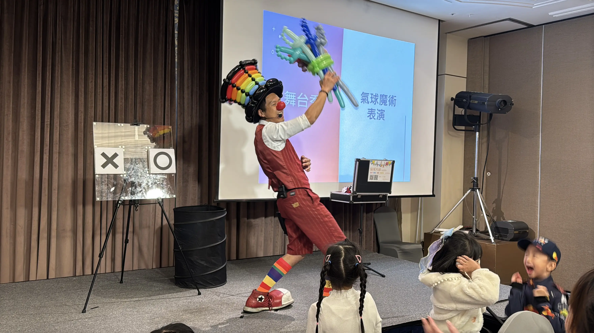
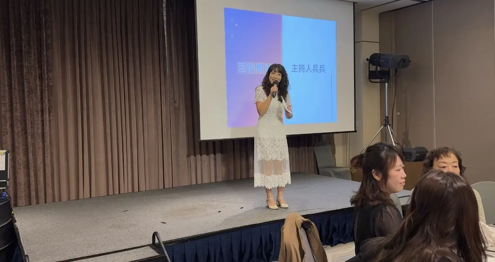
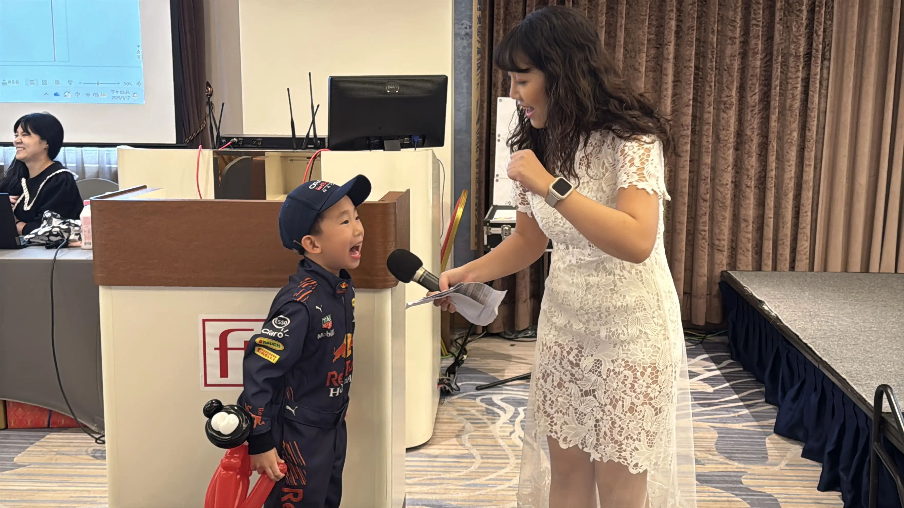
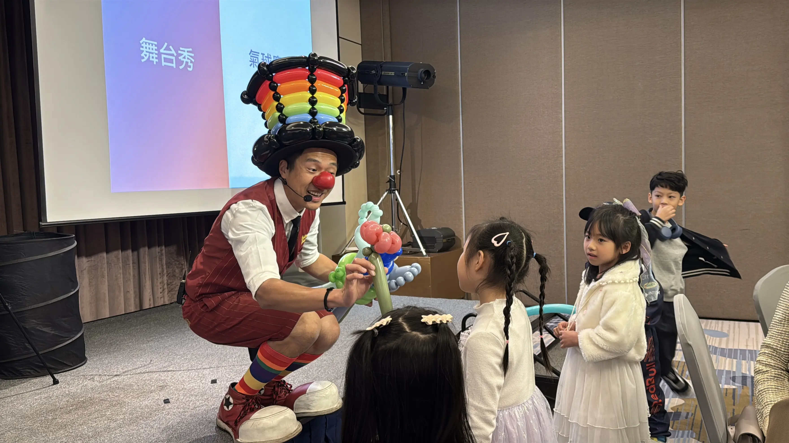
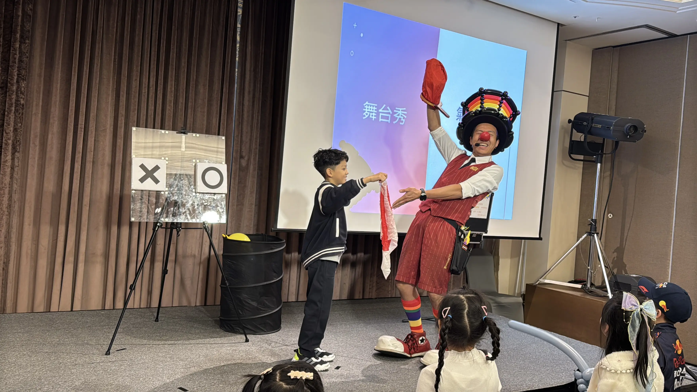
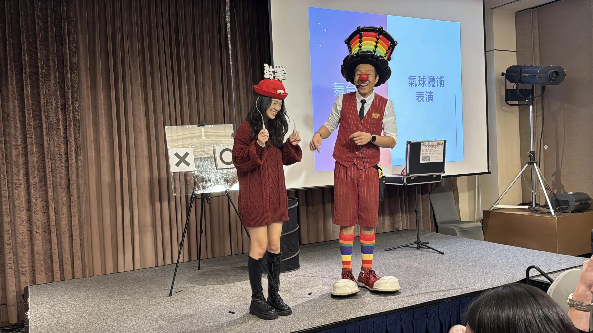
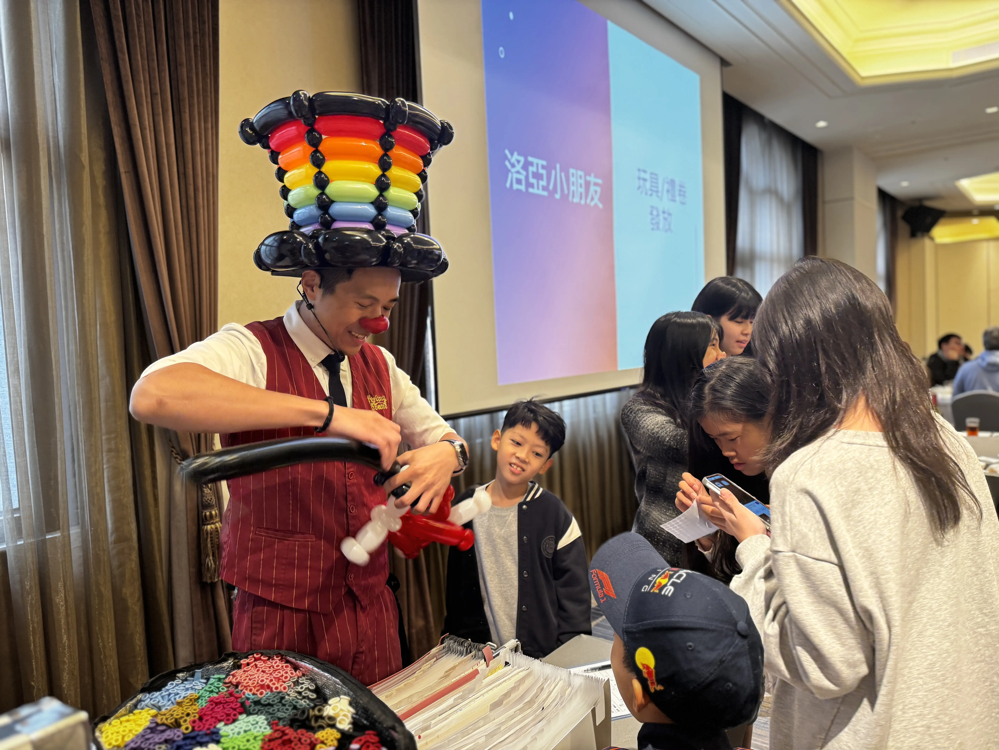
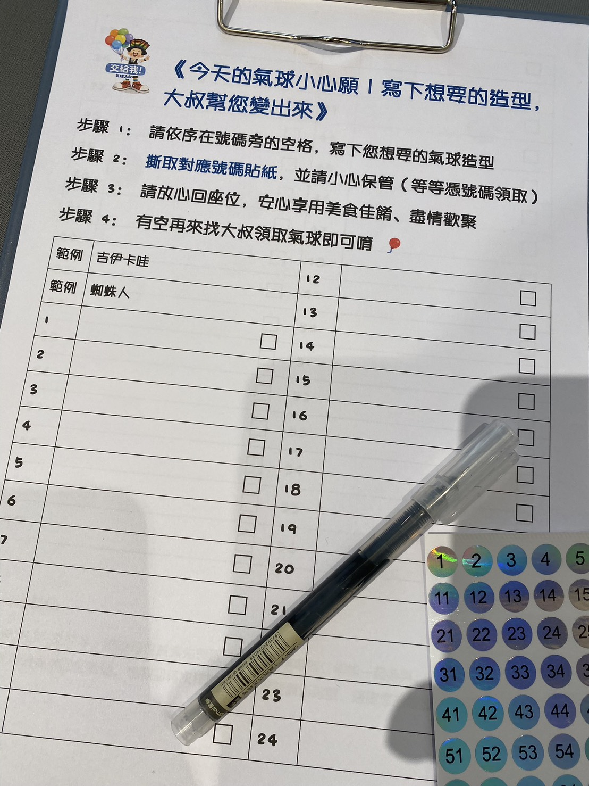

汐止福泰大飯店尾牙表演案例｜洛亞貿易尾牙宴主持、氣球魔術互動秀與定點手折紀錄
從主持暖場、舞台互動到餐敘後的定點手折，讓尾牙不只熱鬧，更兼顧現場節奏與用餐流程
📊 洛亞貿易尾牙宴・活動成果摘要
- 活動類型：企業尾牙宴
- 活動地點：汐止福泰大飯店（新北市汐止區大同路一段 128 號）
- 服務內容：專業主持（主持人兵兵）＋舞台互動魔術（氣球大叔 Sony）＋定點氣球手折
- 排隊管理：獨家許願板與號碼貼紙機制（完全不影響用餐與出菜動線）
- 活動對象：企業同仁＋家屬眷屬＋熱情孩童（跨年齡層同樂）

對很多企業主辦人來說，尾牙最難的從來不是找表演。
而是如何讓主管、員工、家屬與孩子，都能在同一場活動裡找到參與感。在籌辦尾牙流程規劃時，HR 與福委窗口最擔心的通常是跨年齡層的觀眾胃口難以兼顧，或是現場流程因節目銜接不當而顯得冷場。
2026 年 1 月 19 日，氣球大叔 Sony 受邀來到 汐止福泰大飯店，為 洛亞貿易尾牙宴 帶來一場兼具舞台氣氛、觀眾互動與餐敘流程規劃的完整演出方案。這場活動除了有 主持人兵兵 負責專業暖場與現場帶動，也深度結合了 氣球魔術互動表演 與 定點氣球手折，讓尾牙不只是吃飯與抽獎，而是真正有笑聲、有參與感，也有記憶點的企業聚會。
這場洛亞貿易尾牙宴不只是單一表演安排，而是由氣球大叔 Sony 協助整合主持暖場、互動表演與定點手折內容，讓主辦方在同一個窗口下，就能更有效率地完成活動規劃與現場執行。
主持暖場：先把現場氣氛打開，尾牙活動才會順
企業尾牙和生日派對、親子活動不太一樣。尾牙現場往往同時有主管、同仁、家屬與小朋友，活動要順，不只是節目本身精彩，更重要的是一開始有沒有人能把節奏帶起來。

這場洛亞貿易尾牙宴，由主持人 兵兵 率先登場，用自然的帶動方式讓現場來賓慢慢進入活動狀態。從主持開場到與觀眾互動，兵兵把原本偏向餐敘的氛圍，慢慢拉到大家願意注意舞台、願意參與、也願意跟著笑的熱烈節奏。對尾牙活動來說，這種暖場非常重要，因為它能讓後續的表演更容易接上，也讓整場流程更加流暢。

氣球魔術互動表演：讓尾牙不只是看表演，而是真的一起參與
在主持暖場後，接著由氣球大叔 Sony 帶來 氣球魔術互動表演。這場演出不是單純站在台上完成橋段，而是把現場觀眾、孩子與來賓都拉進節目裡，打造高品質的尾牙流程體驗。

開場時，我手捧氣球花束登場，先把大家的視線拉回舞台中央。這種方式很適合尾牙，因為它不需要太長的鋪陳，就能立刻製造畫面與氣氛。接著透過近距離互動，把造型氣球作品送到熱情的觀眾手上，讓台下不只是「看」，而是會期待下一個參與機會是不是輪到自己。

其中一個很有現場反應的橋段，就是邀請觀眾上台互動。從白色絲巾變成帶著大家的愛的愛心絲巾，整個氣氛會瞬間被拉高。這類互動最有價值的地方，不在於效果本身，而在於它能讓尾牙現場從被動欣賞，變成主動投入。對企業活動來說，這種參與感往往比單純看完一段節目更容易留下印象。

現場影片紀錄｜洛亞貿易尾牙宴氣球魔術互動秀
除了照片紀錄，這場洛亞貿易尾牙宴也留下了現場影片。從舞台互動、觀眾參與到氣氛帶動，都能更直接看見尾牙活動當天的真實節奏與笑聲。
為什麼企業尾牙適合安排氣球魔術互動秀？
以這場洛亞貿易尾牙宴為例，台下不只有長官與同仁，還有許多跟著爸媽來吃尾牙的小朋友。面對這樣跨年齡層的觀眾，福泰大飯店的場地雖然正式，但如果只安排傳統表演，氣氛很容易變得拘謹。
這時候，氣球魔術的優勢就發揮出來了：當台上的氣球變形、破裂或飛出，小朋友的尖叫聲往往會帶動大人的笑聲。看著平時嚴肅的主管在台下跟著拍手，或是同事的孩子拿著造型氣球滿場跑，這種全家同樂的畫面，才是企業舉辦尾牙最想看到的真實回饋。
定點氣球手折：把活動熱度延續到餐敘後
舞台表演結束之後，現場並沒有就此降溫，而是接續安排 定點氣球手折互動。這個安排對尾牙與企業家庭日很重要，因為它能讓活動熱度持續延續，同時也讓沒有上台參與的孩子和家長，之後還有屬於自己的客製化驚喜。

在餐敘空檔，我在定點區持續幫大家手折造型氣球。對孩子來說，這不只是拿到一個作品，而是延續剛剛舞台上的快樂；對家長與主辦方來說，則是一種很實際的活動加分，因為小朋友有事情期待、有互動可參與，整體尾牙體驗也會更完整。
尾牙餐敘最怕什麼？不是氣氛不夠，而是排隊打亂流程
很多主辦單位在安排尾牙活動時，最擔心的不是表演不精彩，而是孩子一窩蜂排隊拿氣球，影響現場動線、打斷用餐節奏，甚至影響出菜與敬酒流程。這是非常真實的問題，尤其在企業尾牙、春酒、家庭日這類有餐敘流程的活動中更常見。
所以這次除了定點手折，我們也設計了一套在業界深受好評、兼顧流程與體驗的專利解法：
「許願板 ＋ 號碼貼紙機制」。

這個設計看起來很簡單，但在尾牙現場非常有用。它解決的不只是排隊問題，而是整體流程秩序。主辦方不用擔心現場擁擠，家長不用顧著排隊，小朋友也有一種「我已經有登記好，等等就可以拿到」的期待感。對企業活動來說，這種能兼顧體驗與流程的安排，往往比單純多一個表演更有價值。
汐止福泰大飯店尾牙案例：不只熱鬧，更是完整安排
這場 洛亞貿易尾牙宴，最值得記錄的地方，不只是現場笑聲很多，而是它把幾個原本容易互相衝突的需求整合在一起：
- 專業尾牙主持：讓現場氛圍活絡不冷場。
- 尾牙互動表演：具高度驚奇，且讓大人小孩均能同樂。
- 流程秩序控管：透過號碼牌貼紙，把排隊干擾降到最低。
- 定點氣球派送：延續表演熱度，把快樂實體化帶回家。
當這些元素安排得宜，尾牙活動就不只是「有節目」，而是整場氣氛、流程與體驗都被照顧到了。對主辦方來說，真正省力的不是只找到一位表演者，而是找到能協助整合主持、表演、互動與現場節奏的人。像這場洛亞貿易尾牙宴，就是由氣球大叔 Sony 協助串接主持暖場、氣球魔術互動秀與定點手折，讓各環節更容易彼此配合。這也是我很喜歡企業尾牙活動的原因：它考驗的不只是表演本身，而是整體現場安排有沒有真的站在主辦方角度思考。
適合哪些活動類型？
像這樣的安排，不只適合 企業尾牙，也很適合：
- 春酒活動
- 公司家庭日
- 品牌親子活動
- 商場節慶活動
- 社區晚會
- 婚禮親子互動區
- 需要兼顧餐敘與排隊動線的活動現場
如果活動現場同時有大人、小孩、表演需求與餐敘流程，那麼主持＋互動表演＋定點手折＋排隊管理機制，會是一個很完整的組合。
💡 關於企業尾牙氣球魔術表演的常見問題
- Q1：企業尾牙活動適合安排氣球魔術表演嗎？
- A：很適合。尾牙現場通常同時有公司同仁、家屬與小朋友，氣球魔術互動表演的優勢在於同時具備舞台效果、觀眾參與感與親子互動元素，能讓不同年齡層都自然投入，不會只變成單向欣賞的節目。
- Q2：尾牙餐敘時，排隊拿氣球會不會影響現場流程？
- A：這正是很多主辦單位最在意的問題。像這次洛亞貿易尾牙宴，我們就透過「許願板＋號碼貼紙」機制，讓小朋友先寫下想要的造型、拿取對應編號，再安心回座用餐，之後再憑貼紙領取氣球，減少排隊對餐敘與活動流程的干擾。
- Q3：主持、表演與定點手折可以一起安排嗎？
- A：可以，而且很適合企業尾牙、家庭日或餐敘型活動。由主持人先暖場帶氣氛，再接氣球魔術互動表演，最後安排定點氣球手折，能讓整場活動從開場到餐敘後都維持熱度，也比較容易兼顧不同年齡層的參與需求。
一場成功的親子活動與尾牙宴，
不只是孩子安靜地看完表演。
而是每個孩子都想舉起手，
成為舞台上的主角。
🎯 正在規劃尾牙、春酒或企業家庭日活動嗎？
不只是表演者，也是活動流程秩序的協作專家
對企業尾牙、春酒、家庭日或品牌活動來說，真正麻煩的常常不是找不到節目，而是要自己整合主持、表演、互動區與現場動線。
如果您希望活動不只是安排一段節目，而是真正兼顧主持暖場、舞台互動、親子參與與現場流程，氣球大叔 Sony 不僅提供 精采魔術互動秀服務，亦提供 頂級造型氣球與會場佈置服務。我們可以協助整合主持人、互動表演、定點氣球與 專屬活動會場佈置 內容，讓主辦方用更少的窗口對接，完成更完整的活動籌備。
從單一演出、雙人搭配，到更具深度的活動內容組合，都可以依照您的場地、人數與活動性質彈性客製化規劃。
熱門服務方案包含：
- 企業尾牙 / 春酒活動統籌
- 公司家庭日 / 品牌親子日
- 商場百貨節慶主題造勢演出
- 社區節慶嘉年華與年終晚會
- 婚禮迎賓定點氣球與餐敘互動區
一場成功的尾牙活動，不只是有舞台、有餐點、有抽獎，而是讓不同年齡層都能在同一個空間裡，因為互動而拉近彼此的心。
這次在 汐止福泰大飯店 舉辦的 洛亞貿易尾牙宴，從主持人兵兵的暖場，到氣球大叔 Sony 的互動表演，再到定點手折與許願板機制，整體安排不只熱鬧，也真正兼顧了現場流程與來賓體驗。
這也是我一直很重視的事：
氣球大叔 Sony 不只是提供單一表演，也能依照活動需求，協助整合主持人、互動表演、定點服務與其他現場內容，讓主辦方用更少的窗口，完成更完整的活動安排。